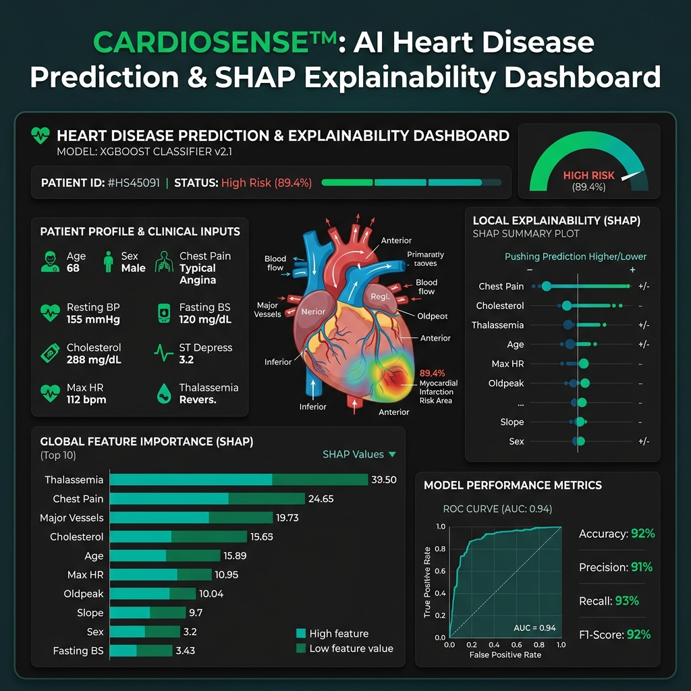
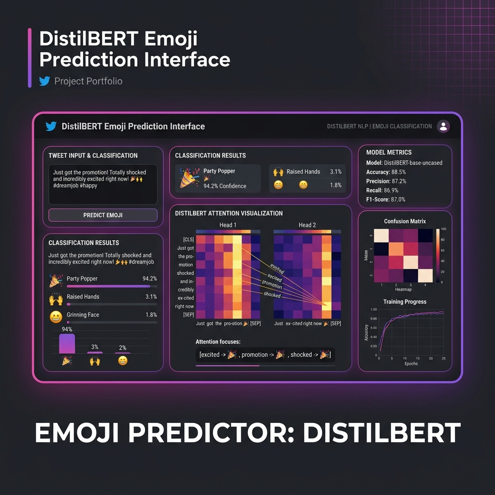
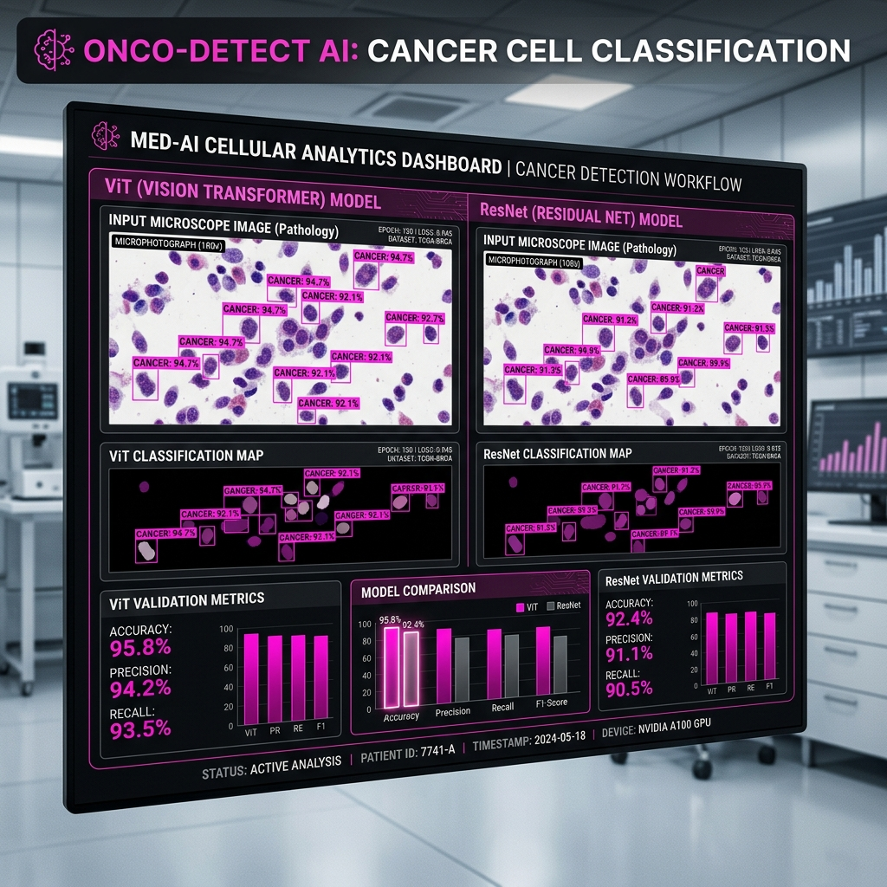

01
Computer vision · Segmentation
Flood Detection from Satellite Imagery
A lightweight U-Net pipeline trained on 306 labeled image-mask pairs, designed to identify flooded regions from satellite data.
0.741validation mIoU
Open to internships & junior roles
I’m Hassan Gebril, a fourth-year Artificial Intelligence student focused on machine learning, data science, and the engineering that makes models useful.
01 / Selected work
Selected projects across computer vision, NLP, tabular ML, and explainable healthcare analytics. Each one is built around a real problem and evaluated on held-out data.
Computer vision · Segmentation
A lightweight U-Net pipeline trained on 306 labeled image-mask pairs, designed to identify flooded regions from satellite data.

Healthcare · Explainable ML
A leakage-controlled, multi-hospital pipeline with MICE imputation, calibration, stacking, threshold tuning, and SHAP explanations.

NLP · Transformers
Fine-tuned DistilBERT for multiclass emoji prediction, improving substantially over a TF-IDF baseline and serving inference through Django.

Computer vision · Ensemble
Validated 220,025 labeled images, removed low-quality samples, and trained a ResNet18–ViT ensemble for robust classification.
02 / Experience
My work combines data preparation, model development, careful evaluation, and practical deployment.
Cellula Technologies
2023 — 2027
Data Science specialization · Arab Academy for Science, Technology and Maritime Transport
03 / Capabilities
I enjoy the full path from raw data and experiments to understandable results and deployable applications.
PyTorch, scikit-learn, XGBoost, LightGBM, CatBoost, Optuna, SHAP
YOLOv8, OpenCV, CNNs, vision transformers, segmentation, video classification
Hugging Face Transformers, DistilBERT, text preprocessing, evaluation, model serving
Python, SQL, pandas, NumPy, MongoDB, Django, Flask, REST APIs, Git
Currently developing
04 / Let’s work together
I’m looking for internships and junior opportunities in AI Engineering, ML Engineering, Data Science, Data Engineering, and Data Analysis.